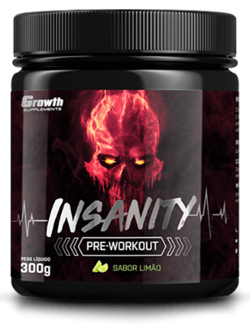

Pré-Treino
•“Pré-treino” é tudo aquilo que pode ser consumido como fonte de nutrientes e energia na refeição que antecede o treino. Não há limitação, podemos falar de uma refeição - alimentos ou podemos falar de suplementos.
•Por conveniência os suplementos pré-treino são confeccionados com substâncias fontes de calorias e/ou substâncias estimulantes da performance física isentos de calorias.
•O pré-treino Insanity foi desenvolvido pela equipe Growth Supplements justamente para deixar seu treino INSANO!!!
